creating a color palette from two colors: three methods.
Over the past few months, I've been working
on a
piece of software designed to make it easier to create color
palettes. as a result of that, I've had to learn a lot about color science
and stuff, so I thought I'd share what I've learned. so, here are
three methods I've used in emerald to programatically generate color
palettes. all code is in javascript.
method one: gradients.
this method might just be the easiest one — interpolating between two colors is fairly simple. you take one color and use it as the starting point, and then mathematically alter that color until you reach the second color.
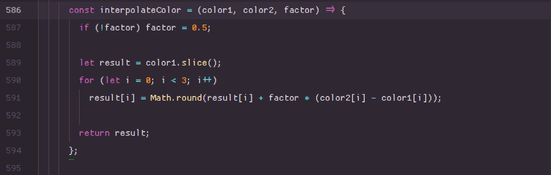essentially, this function takes in two arrays of three rgb values each and a factor to modify the colors by. then, it essentially maps each value in the first array to a new value that's a derivative of the first and second array's corresponding values, modified by the factor. if I were to implement this again, I'd probably just use javascript's array.prototype.map() or something. I used slice() as a quick way to create a copy of the original array. there are other ways to do this, of course, but that must have been the first thing that came to mind for whatever reason.
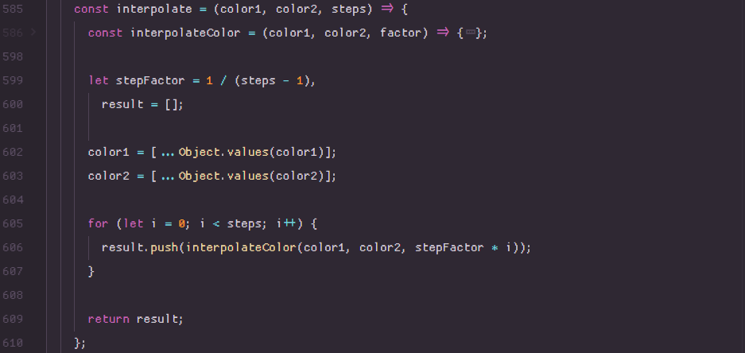the rest of the interpolate function creates the actual array of newly generated colors by taking in the amount of steps to interpolate by (which in my case is just an option in emerald's settings) and the two original colors. it loops through each step and spits out a new array of the gradient. say, for example, I put in white and black, and a factor of ten (default):
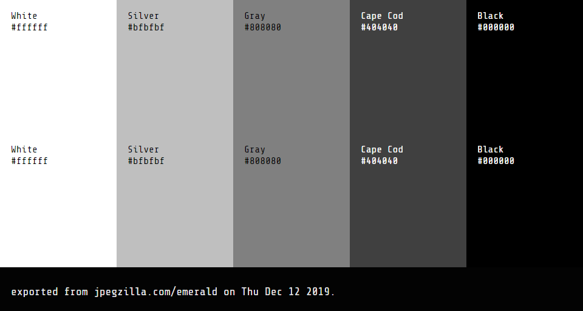and here's an example from red to blue:
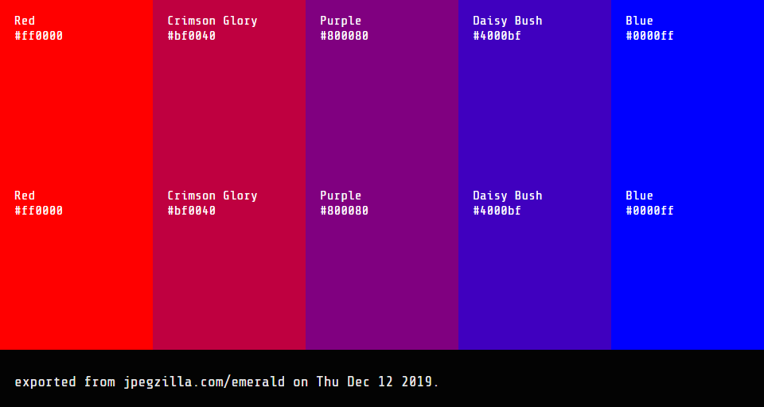and here's one with the count set to ten colors and the factor set to ten.
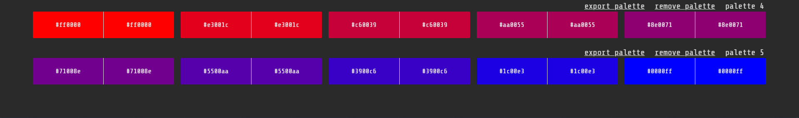I haven't written a way to export a palette with ten colors (because drawing on an html <\canvas> is hard sometimes...).
method two: analogous colors.
analogous colors are groups of directly adjacent colors. for my implementation, I created a loop that creates a new color in an array by shifting the hue of the previous color in the array by whatever factor the user defines.
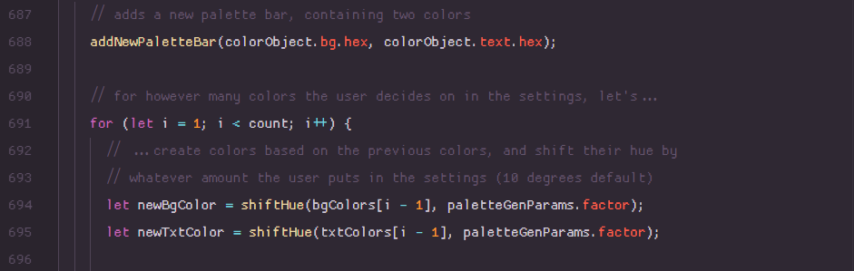and for reference, here's the shiftHue function, which just takes in a color object with the r, g, and b values as keys, modifies the hue of the color by any amount of degrees, and spits out the new rgb color:
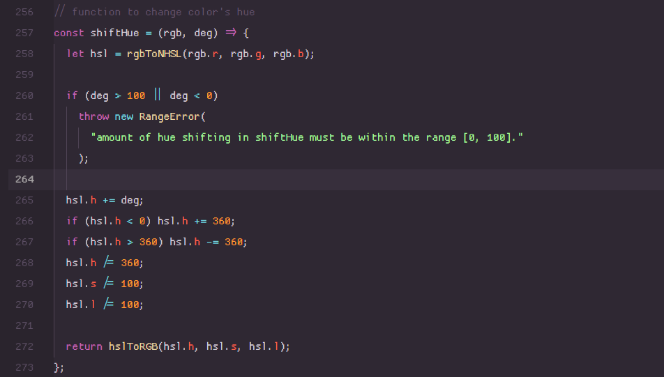this one is somewhat subjective. another method you could try is using adjacent colors on either side of the original color. here's what I mean (gracefully illustrated in ms paint):
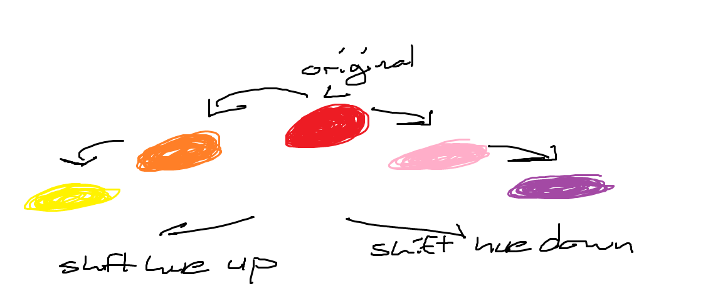here's what emerald does (at least in analogous mode!):
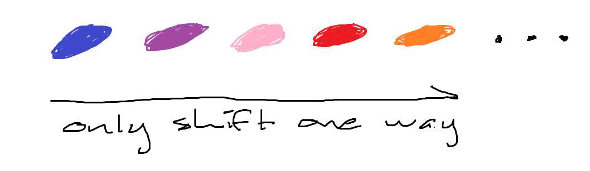and finally, here's an example of an analogous color palette generated in emerald from the colors 'spanish sky blue' and 'picasso'. it's actually really pretty! it's really obvious from this picture that the hue has only been modified in one direction.
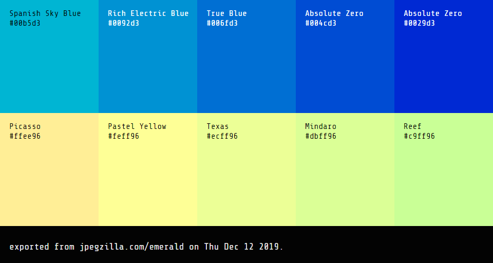method three: monochromatic palettes.
call me boring, but monochromatic palettes are really beautiful to me. limitations breed creativity, of course, but that's only one of the reasons why it's so fun to use monochromatic palettes. this method is pretty dead simple:
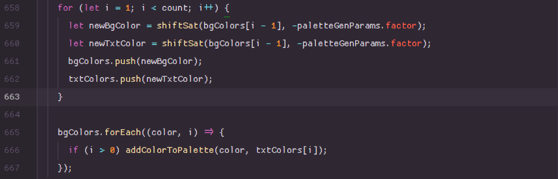again, this just involves a loop that runs as many times as the user has specified. however, instead of shifting the hue, this time we're just shifting from the last color's saturation. here's what shiftSat does (converting from rgb to hsl, changing saturation, and converting back to rgb):
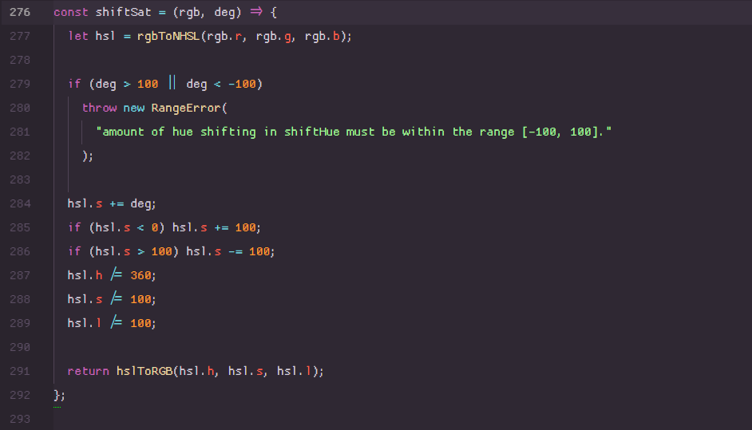you might have noticed from the first image that the saturation unconditionally shifts saturation downward. of course, if you have a color with low saturation already, this results in something like this:
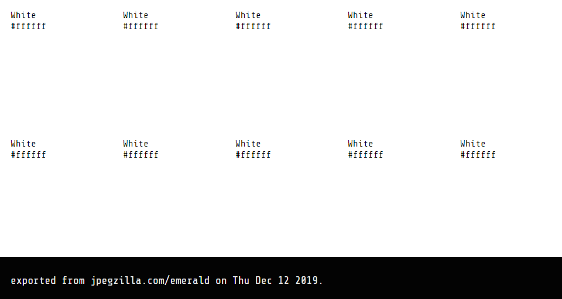right now, all I'd have to do is change the sign of the factor from negative to positive depending on how saturated the color is. that's coming in the next release of emerald for me — but for you...you already know how to handle it, so don't make the same mistake I did! and, for good measure, here's a pretty monochrome palette from emerald based on lavender:
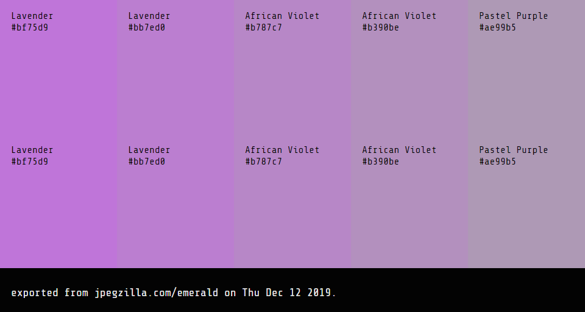and a similar palette with a higher modification factor (twenty):
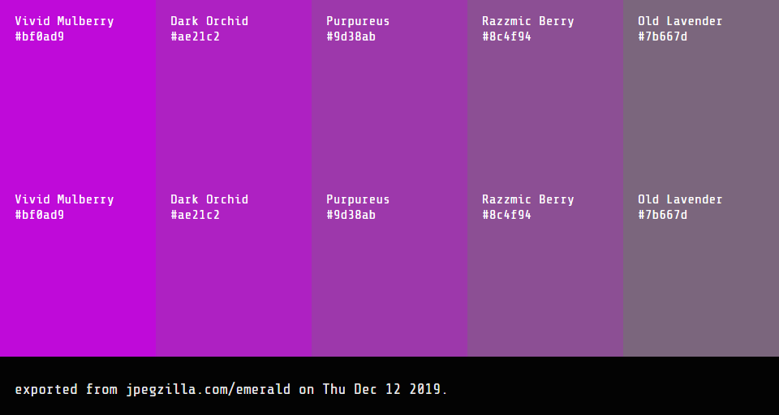notes regarding emerald: sometimes colors in emerald are so close that they are named as the same color. I might fix that later if I can find / create a larger color name library.
also, if you set the modification factor really really high, like
a hundred, and you're only modifying saturation, you'll only get
two colors repeating alternately. because if you take too much
saturation out of a color, the saturation shifting function just
'loops around' to the max / min saturation. the max saturation of
a color is only one hundred, anyway.
Anyway, that's about it for now. I'll be
adding new palette generation functionality to emerald sometime
early next year — I already have the framework laid for
complementary palettes. thanks for reading, and I'll be back in
(indeterminate amount of time) with another
hopefully useful post!
currently listening to:
-
rest in peace, saith the lord
by
demetori
(instrumental metal)
-
heaven-adjacent
by
halley hard sound unit
(ambient / drum n bass / psytrance)
-
ssfme
by
the musmus (emo
rock)
-
ludens
by
bring me the horizon
(post-hardcore)
-
excavation of asphodel meadows
by
halley hard sound unit
(ambient / drum n bass / psytrance)
-
you so / youth soul
by
I mean us
(dream pop / shoegaze)